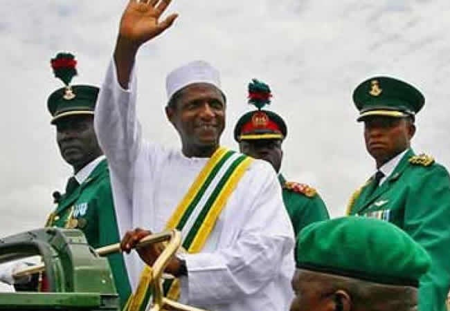

UMAR MUSA YAR'ADUA
A man who saved a billion lives

Nigerians from across all sectors on Tuesday paying tribute to the memory of President Umar Musa Yar'adua who died ten years on May 5, 2010.
Here is the profile of the Late President:
- 1951-Born in Katsina, Northern Nigeria.
- 1972-He was admitted to Ahmadu Bello University Zaria, where he studied Chemistry Education.
- 1979-He worked as a lecturer till 1983 when he started working in the corporate sector.
- 1999-Yar'adua won the governorship of Katsina State. He was the first governor to declare his asset to the public.
- 2007-He emerged as the winner of the presidential election. Though, people were of the opinion that the election was rigged in his support, which was orchestrated by the then incumbent president.
- 2010 On May 5, he died of a chronic kidney disease unable to complete his tenure and fulfil all the promises he made during election campaign
you may likely wish to know more about this great icon here